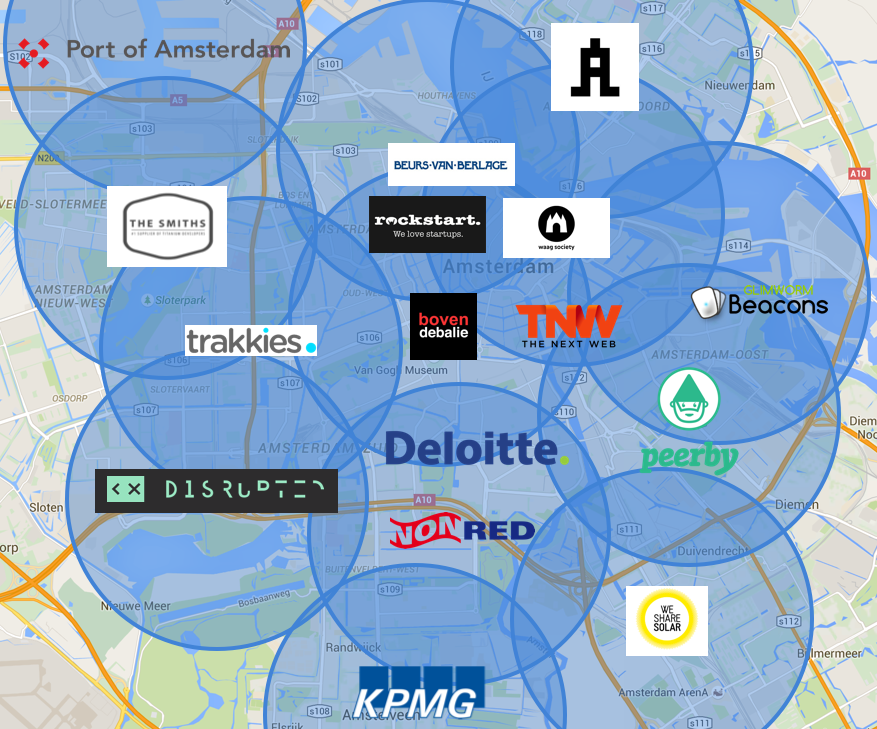

The internet just turned 25. This is a big moment, but we’re only getting started. After putting a super computer in everyone’s pocket, other things around us will be connected to the internet as well. People and machines will be able to interact with the physical things around them in a whole new way. Machines will be able to talk machines and sensors will generate vast amounts of data.
Introducing ‘The Things Network’. A new type of data network, that is open and free. The cool thing is that it’s build by the people for the people. This makes it the first crowdsourced data network in the world. Launching in Amsterdam first, but soon in a city near you. If you contribute like us…
 The network is powered by LoRaWAN. This technology recently came to market and was developed with a specific focus on machine-to-machine communication and the rise of sensors. Long range and low energy consumption. You can read all about it in the press release below.
Here at the studio we’re passioned about technology and changing things for the better. So we embraced ‘The Things Network’ initiative in a heartbeat. We believe in an open and free internet, that’s available for everyone. Together we can make this work.
Respect to our friend Wienke, who pulled this off in just a couple of weeks. I like this quote by him.
“If we leave this task up to big telcos, a subscription model will be enforced and we will exclude 99% of the cool use cases. Instead, let’s make it a publicly owned and free network so businesses and use cases will flourish on top of it„
Now that the data network and sensor technology are here, it’s time to build some brilliant applications. Got ideas? Get in touch.